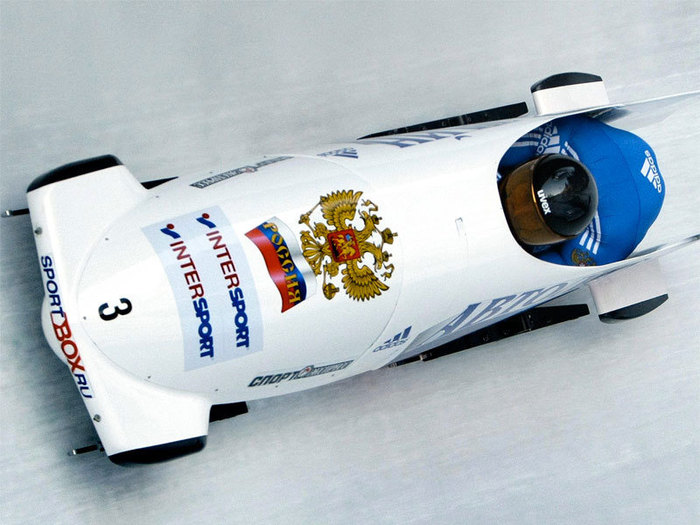
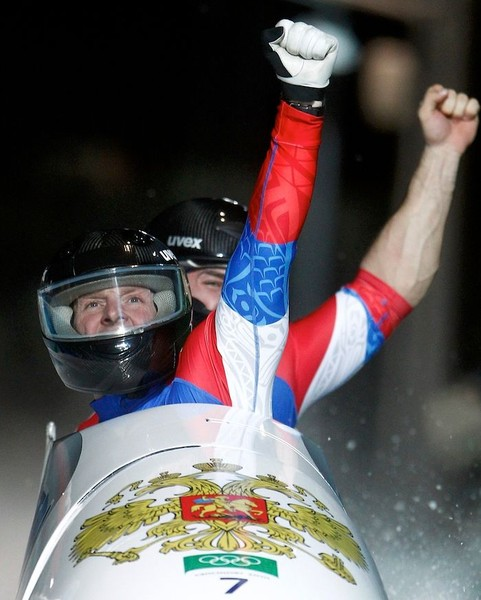
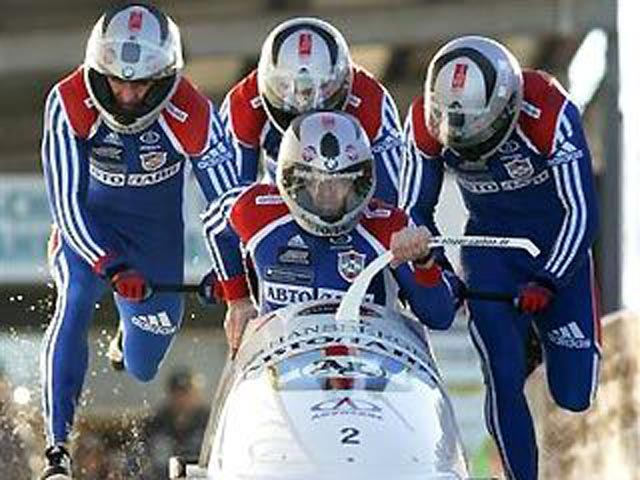
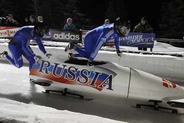
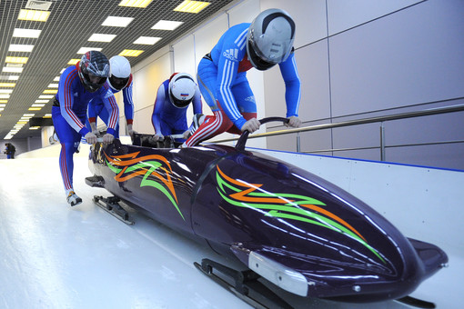

Бобслей
Боб - продолговатые сани обтекаемой формы на длинных полозьях.
Перед каждым стартом полозья боба проверяются на отсутствие специальных смазок. Поскольку бобы бывают как двухместные, так и четырехместные, их длина и вес существенно различаются. Также существуют ограничения по суммарному весу, которые способны выдержать такие сани. В двойках это 200 кг, а в четверках – 400 кг. Иногда боб сравнивают с «космическим шаттлом» - что не является такой уж фантастикой. При конструкции бобов последнего поколения используются технологии, применяемые в космической авиации.
Заезд в бобслее происходит так. По сигналу участники экипажа начинают разгонять боб. Они обязаны занять свои места, а по сути – запрыгнуть в узкий боб на скорости более 40 км/ч, до того момента, как сани пересекут специальную отметку. В каждом экипаже есть пилот, который и осуществляет управление бобом. Именно он является капитаном экипажа, и именно от его умений зависит то, с каким временем команда прибудет к финишу. И прибудет ли она вообще… Да, да, скорость движения таких саней порой достигают 150 км/ч, в связи с чем нередки случаи переворота боба прямо в желобе, из-за чего спортсмены в лучшем случае получают травмы различной степени тяжести.
Интересный факт
Длина трассы — 1500—2000 м с 15 виражами минимального радиуса 8 м, а перепад высот от 130 до 150 м.
Трасса для бобслея никоим образом не похожа на типичную горку в вашем дворе. Это – ледяной жёлоб, который полон большого количества крутых поворотов и виражей. Благодаря тому, что боб выезжает на более высокие участки жёлоба при повороте сани набирают скорость. И именно на таких участках самая высокая вероятность перевернуться. Средняя длина такой трассы колеблется от 1500 до 2000 м.
Бобслей последние 10-15 лет является тем видом спорта, в котором представители России неизменно претендуют на самые высокие места. Помимо наших бобслеистов в этом виде спорта традиционно сильны немцы, австрийцы, швейцарцы и канадцы.
{kind=link}
{kind=link}
{kind=link}
{kind=link}
{kind=link}